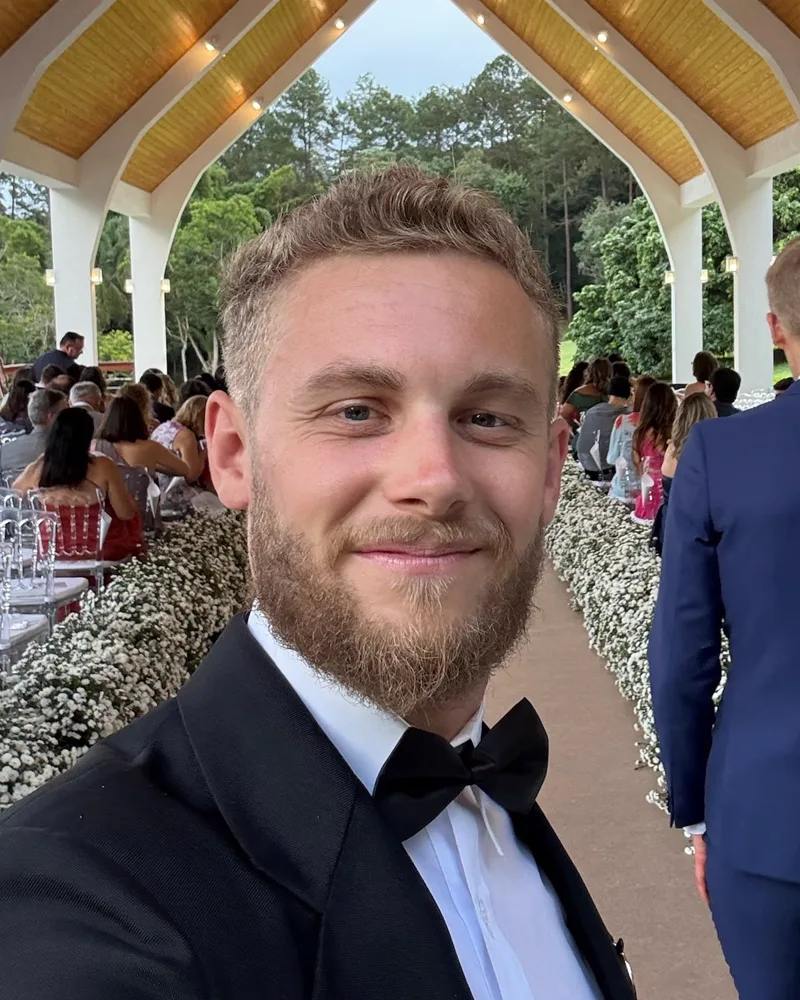

Camera
Florian Wenk
I'm driven by a curiosity for life and the power of a good story. As a visual storyteller, I shape stories from concept to camera to edit that inspire people and remind us how beautiful and worth protecting our planet is.